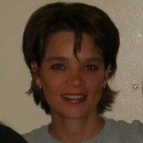

The History of Me
A Timeline

Birthdate: October 31, 1970
Birthplace: Mesa, Arizona
Nationality: American
Occupation: Educator
Timeline
Overview
Pallas Kennedy is a high school teacher renowned for her innovative approach to education, focusing on student-centric and discovery-based curriculum. Born and raised in Mesa, Arizona, Kennedy has significantly impacted the happiness and well-being of hundreds of students through her warm and inclusive classroom environments.
Early Life and Education
- Childhood: Born in Mesa, Arizona, raised in Apache Junction, Pallas embraced the freedom of the desert. Influenced by her parents, she developed values of inquisitiveness and compassion.
- Schooling: Excelled in academics early on, winning the school spelling bee in 3rd grade, fostering a love for learning.
- High School: Returned to Mesa for high school, participating in various activities and laying the groundwork for her future career in education.
Family and Education Years
- Family Life: Married young and moved frequently due to her spouse’s career, becoming a mother and initially homeschooling her children.
- Higher Education: Returned to Mesa at 30, pursued and excelled in higher education, receiving degrees in Physics and later teaching at the collegiate level.
Career
- ITT Tech (2009-2012): Taught trade school adults in subjects like Algebra and Physics, began developing remediation curricula.
- New School for the Arts (2012-2022): Moved into secondary education, teaching algebra and physics through innovative, student-centric methods.
- East Valley Institute of Technology (2022-current): Dived into teaching Software and App Design, leveraging industry partnerships to enrich student learning.
Personal Life
- Current Hobbies: Enjoys crochet, exploratory cooking, and off-roading. Continuously learning new skills like programming.
- Past Activities: Engaged in cycling, swimming, hiking, and more, showing a lifelong commitment to active and diverse interests.